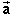
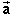
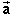

exerted on a given object A, i.e., object A is
interacting with only one other object B, then this force is
defined to be numerically equal to the product of mass m
and acceleration 
of object A,
exerted on a given object A, i.e., object A is
interacting with only one other object B, then this force is
defined to be numerically equal to the product of mass m
and acceleration 
of object A,
In Newtonian mechanics, force is a manifestation of the interaction between two objects.
One distinguishes between different kinds of forces depending on the nature of the interaction. The mathematical expressions representing different kinds of forces are different.
In macrosopic physics, as opposed to elementary particle physics, one distinguishes the following kinds of forces:
Terminology. An object has momentum and has kinetic energy, but it does not have force. Instead, one says that a force "is exerted on an object". This terminology suggests that there is another object involved that exerts the force. The complete expression is to say that a force "is exerted on object A by object B". This way of talking about force makes it clear what force one is talking about.
Quantitative Definition. Force is a vector quantity.
Assuming there is only one force exerted on a given object A, i.e., object A is
interacting with only one other object B, then this force is
defined to be numerically equal to the product of mass m
and acceleration 
of object A,
= m.
The symbol in
this equation stands for a mathematical expression, the force
expression, that charaterizes the particular force involved.
If the force exerted on object A is a fundamental force, the
force expression involves parameters relating to object A and
the other object B that is interacting with object A. E.g., if
we are dealing with the gravitational force, the force
expression is known as Newton's law of gravitation and
involves the masses of objects A and B and the displacement
vector from one object to the other. In the case of a contact
force, e.g., the force applied to object A by a rope attached to
this object, the force expression may be simply a specific
vector whose magnitude has been determined empirically and whose
direction is known also.
Note that the product m is not considered to be a force. This product
is what the force expression is equal to.
If more than one force is acting on object A, i.e., object A is interacting with more than one other object, the product m is equal to the vector sum of the corresponding force expressions. This sum is called the net force. The statement that the net force acting on an object is equal to the product of mass and acceleration of the object is known as Newton's second law of motion.
The SI-unit of force is the newton (N).